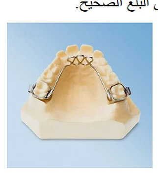
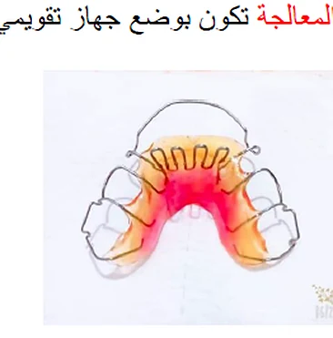
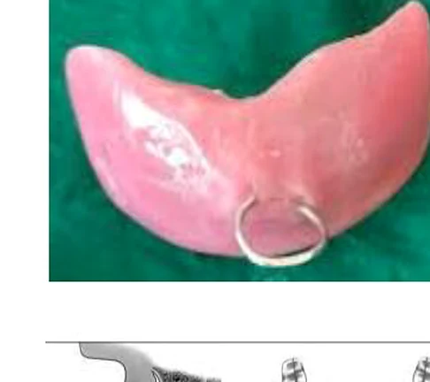
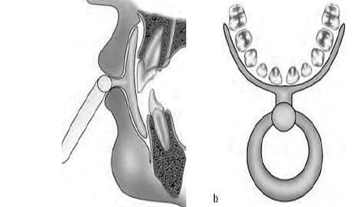
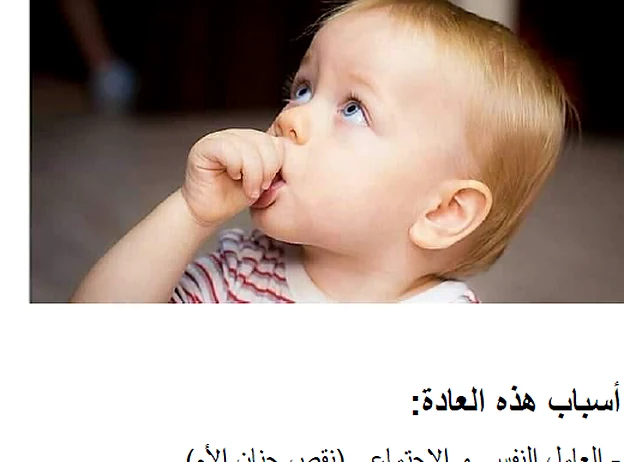
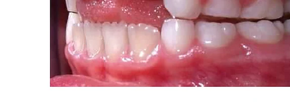
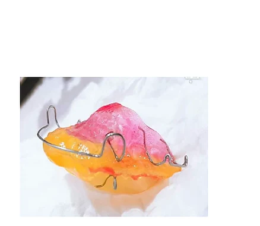
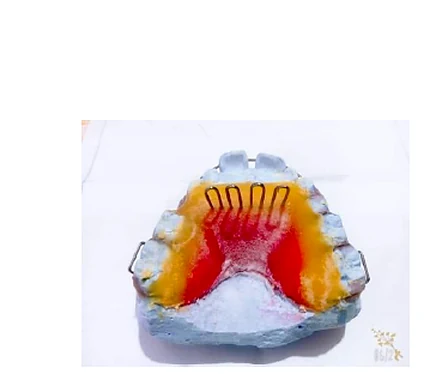

تشمل هذه الصفحة أربع عادات أو حالات ذات أثر مهم في الفم والأسنان والنسج الداعمة، وهي:
دفع اللسان، التنفس الفموي، مص الإصبع، والتبغ.
تؤثر هذه العادات في اتجاه القوى الإطباقية، تموضع الأسنان، صحة اللثة، وشكل القوسين السنيتين.
القاسم المشتركضغط مستمر أو متكرر يغيّر التوازن العضلي والإطباقي.
أهم النتائجسوء إطباق، نخور أو التهابات لثوية، تشوهات في القوس، وتغيرات في النسج الداعمة.
مبدأ المعالجةإزالة السبب والعادة ثم التوجيه الوظيفي والمعالجة التقويمية عند الحاجة.
تمهيد
نظرة سريعة على المحاور
O
دفع اللسان والتنفس الفموي
يرتبطان غالباً بتبدل القوى المؤثرة على الأسنان الأمامية والفكين، وقد يسببان سوء إطباق، ميلان القواطع، التهابات لثوية، وضيق القوس العلوية.
مص الإصبع والتبغ
مص الإصبع من العادات الطفولية الشائعة وقد يؤدي إلى عضة مفتوحة وتضيق القوس. أما التبغ فيترافق مع تغيرات لونية ونسجية والتهابات وآفات أكثر شدة ضمن الفم.
أولاً
دفع اللسان
1
تسبب هذه العادة قوة دفع مستمرة على الأسنان، وغالباً على الأسنان الأمامية. تحدث عوضاً عن وضع ظهر اللسان بملامسة قبة الحنك، مع احتفاظ ذروة اللسان خلف الأسنان العلوية أثناء البلع على الأسنان الأمامية السفلية التي تنثني وتتباعد جانبياً.
قد يسبب الدفع اللساني ضغطاً جانبياً شديداً يعرّض النسج المحيطة بالأسنان للأذى، كما قد يسبب افتتاحاً في المناطق الأمامية أو الخلفية من الإطباق.
التأثيرات الثانوية
تشوه وميلان الأسنان الأمامية العلوية بسبب تغير اتجاه القوى الإطباقية.
ازدياد الضغط الجانبي المطبق على التيجان.
ضخامة الهجرة الشفوية وظهور دوران شفوي لساني غير مرغوب فيه.
تضاد بين القوى الموجهة للأسنان شفوياً وضغط الشفة الداخلي، مما قد يسبب تحرك السن.
المعالجة: وضع جهاز تقويمي يساعد الطفل على التعود على البلع الصحيح.

وسيلة علاجية تقويميةتُستخدم لتوجيه اللسان وتعليم البلع الصحيح.

مثال ثانٍيُظهر نفس المبدأ العلاجي في منع الدفع اللساني غير الطبيعي.
ثانياً
التنفس الفموي
2
الأسباب المؤدية
انسداد المجاري التنفسية بشكل ولادي أو مكتسب.
كسور أو رضوض أو انحرافات الوتيرة الأنفية.
ضخامة القرينات الأنفية أو تورمها الالتهابي.
وجود أورام عظمية أو ليفية في الحفرة الأنفية.
ضخامة اللوزات أو الناسيات الغدية، واللسان العرطل الكبير.
وهَن في الشفاه يؤدي إلى ميلان القواطع العلوية دهليزياً.
بروفيل وجه طويل ورفيع، ضيق القوس العلوية، وظهور العضة الخلفية المعكوسة.
تراكب الأسنان العلوية أو انطمار بعضها.
العلاج
يبدأ بعلاج السبب المؤدي، مع إحالة المريض إلى اختصاصي أنف أذن حنجرة عند الحاجة.
يمكن استخدام الشاشة الفموية الواقية، وهي جهاز من صفيحة أكريلية يلامس السطوح الدهليزية للفكين أثناء النوم، ويساعد على التحول التدريجي إلى التنفس الأنفي.

الشاشة الفموية الواقيةجهاز يساعد على تدريب المريض على التنفس الأنفي تدريجياً.

توضيح تشريحي/وظيفييوضح شكل الجهاز وعلاقته بالفك أو المجرى التنفسي.
ثالثاً
مص الإصبع
3
منعكس المص هو النظام العصبي الباكر الذي يسمح للطفل بالرضاعة والالتصاق بالأم، وهو موجود منذ المراحل الأولى بعد الولادة. وعندما يُستبدل الإرضاع الطبيعي بالرضاعة الصناعية أو تُختصر مدة الرضاعة قد يضطر الطفل إلى مص الإصبع تعويضاً للنقص الحاصل.
تنشأ عادة مص الإصبع خلال السنوات الأولى من عمر الطفل.
يمارسها نسبة ملحوظة من الأطفال.
يمكن أن يبدأ العلاج بعمر 5 سنوات تقريباً.

صورة سريرية عامةتوضح الممارسة الشائعة للعلاقة بين المص والطمأنة الذاتية عند الطفل.
أهم أسباب هذه العادة
العامل النفسي والاجتماعي ونقص حنان الأم.
دور الرضاعة الصناعية.
ولادة طفل جديد في العائلة أو الاهتمام الزائد به.
عدم كفاية حليب الأم أو عدم الاستعاضة بالحليب الصناعي وشعور الطفل بالجوع.
موقف الأهل غير المتفهم لطبيعة العادة وأسباب لجوء الطفل إليها.
فراغ بين الأسنان الأمامية العلوية والسفلية (العضة المفتوحة).
تضيق في القوس السنية العلوية قد يجعلها على شكل حرف V.
قد تظهر العضة الخلفية المعكوسة ومشاكل في النطق وتشوه الإصبع.
تتأثر الشدة بوضع الإصبع، مدة استمرار العادة، وعدد ساعات ممارستها خاصة أثناء النوم.

أثر سريري على الإطباقيظهر بروز القواطع والفراغ الأمامي الناجمين عن مص الإصبع.
المعالجة
غالباً ما يحدث تصحيح عفوي للعضة المفتوحة بعد زوال العادة، أما استمرارها بعد 8 سنوات فقد يحتاج إلى تصحيح الخلل المتشكل.
التخلص من العادة يحتاج إلى تعاون طبيب الأسنان وطبيب الأطفال والأخصائي النفسي والأهل.
التوعية: شرح أثر العادة على الطفل وتفهّم مشكلته وتأمين الحنان والطمأنينة.
وسائل التذكير: كربط الإصبع أو وضع طلاء سيئ الطعم، مع الحذر من الأساليب العنيفة.
المكافأة: تشجيع الطفل عند التوقف عن العادة.
الوسائل الميكانيكية: أجهزة تقويمية مثل كابح اللسان أو الأكتيفاتور.

جهاز علاجي 1وسيلة ميكانيكية لتعديل السلوك الفموي الضار.

جهاز علاجي 2مثال إضافي للوسائل التقويمية المساعدة.
رابعاً
التبغ
4
فكرة أساسية
لا يسبب التدخين عادة تغيرات لثوية واضحة بذاته فقط، لكن الحرارة وتجمع نواتج الاحتراق يمثلان مخرشين موضعيين. كما يمكن ملاحظة تبدلات فموية مهمة عند المدخنين.
ملاحظة سريرية
تتدرج التبدلات من فضلات سمراء تشبه القطران وتلون الأسنان إلى تغيرات منتشرة في اللثة والمخاطية، مع ازدياد شدة الإصابات النسجية لدى المدخنين.